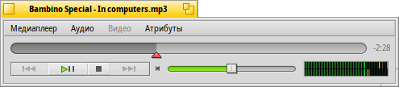
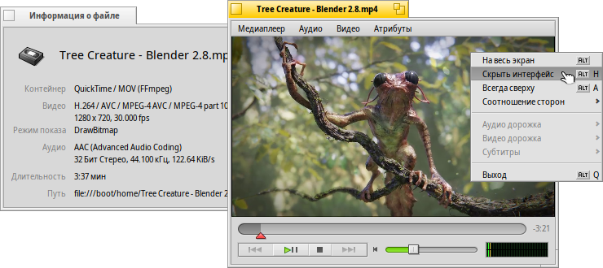
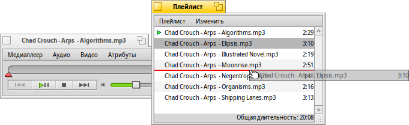
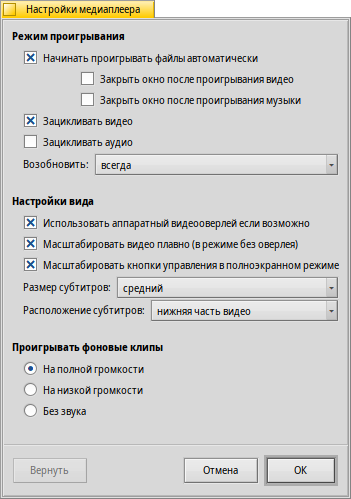

Русский
Русский Français
Français Deutsch
Deutsch Italiano
Italiano Español
Español Svenska
Svenska 日本語
日本語 Українська
Українська 中文 ［中文］
中文 ［中文］ Português
Português Suomi
Suomi Slovenčina
Slovenčina Magyar
Magyar Português (Brazil)
Português (Brazil) English
English Медиаплеер (MediaPlayer)
Медиаплеер (MediaPlayer)
| Расположение в Deskbar: | ||
| Расположение в Tracker: | /boot/system/apps/MediaPlayer | |
| Настройки хранятся по адресу: | ~/config/settings/MediaPlayer |
Медиаплеер - приложение для воспроизведения видео и аудио файлов. Спасибо команде ffmpeg: благодаря им проигрыватель поддерживает большинство форматов . Графический интерфейс медиаплеера довольно прост:
Шкала прогресса позволяет быстро перейти к определённому моменту. Если удерживать некоторе время курсор мыши над этой шкалой, то появится подсказка отображающая сколько времени прошло с начала воспроизведения и сколько осталось до конца. Справа от шкалы находится время оставшееся до
конца воспроизведения, однако сделать так чтоб вместо него отображалось время прошедшее с начала проигрывания, или длину клипа. Для этого просто щёлкните по этому месту.
Нижен вы найдёте привычные элементы управления - предыдущий трек, проиграть/приостановить, остановить, следующий трек. Далее располагается управление громкостью (щёлкните левой кнопкой мыши по значку с динамиком для того чтобы отключить звук) и измеритель уровня громкости (VU meter).
Воспроизведение аудио и видео
Поскольку нет каких-либо особенностей, которые следовало бы описать, при воспроизведении аудио-файлов. То перейдём к описанию основных особенностей при воспроизведении видео-файлов.
Для всех медиа-файлов доступен пункт меню (также можно вызвать использовав сочетание клавиш ALT I). В вызываемом этим пунктом меню окне отображается информация о продолжительности и кодеках.
Большинство наиболее часто используемых команд находятся в контекстном меню, которое вызывается щелчком правой кнопки мыши по любой видео области. Удобно использовать в полноэкранном режиме.
В меню вы найдёте полезные опции, такие как выбор соотношения сторон. Чтобы сбросить настройки соотношения сторон выберите пункт .
Медиаплеер поддерживает субтитры в формате SRT. Для того чтобы включить отображение , они должны находиться в одной папке с видео файлом и иметь точно такое же имя файла с суффиксом языка и расширением ".srt". Например, следующим образом:
Мой Фильм.avi Мой фильм.Немецкий.srt Мой фильм.Английский.srt Мой фильм.Русский.srt
Звуковые дорожки можно переключать при помощи пункта меню . Пункт в меню позволяет переключать видео дорожки.
При помощи пункта меню вы переведёте Медиаплеер в полноэкранный режим (либо при помощи сочетания клавиш ALT ENTER или F, а также дважды кликнув левой кнопкой мыши по области видео). Спрятать границы окна и другие элементы интерфейса при помощи пункта меню (либо при помощи сочетания клавиш ALT H или дважды щёлкнув правой кнопкой мыши по области видео). Включив функцию , окно Медиаплеера будет отображаться поверх всех окон (также можно активировать при помощи сочетания клавиш ALT A).
Список воспроизведения
Пункт в меню (либо при помощи сочетания клавиш ALT P) - открывает окно с плейлистом. Двойной щелчок левой кнопкой мыши по любому элементу списка запустит воспроизведение.
You can add more files by dropping them into the list and rearrange their position via drag & drop. From the menu you can or (DEL) an entry from the list or delete the actual file with (ALT T).
И конечно же вы можете плейлист и позже его снова, либо дважды щёлкнуть левой кнопкой мыши по файлу плейлиста в Tracker.
Настройки
Рассмотрим параметры для настройки МедиаПлеера:
The first batch, , is pretty self-explaining. Start playback automatically, close windows when finished or play clips in a loop.
Далее идут различные .
Вы можете выбрать пункт , позволяющий понизить нагрузку на процессор, но работающий только для одного окна и требующий драйвер видеокарты, поддерживающий данную возможность.
Вы можете выбрать (в режиме без оверлея) использующее очень быструю фильтрацию для сглаживания, в противном случае при изменении размера видео, или просмотра в полноэкранном режиме появляются блочные пиксели.
if you prefer slightly bigger controls, maybe because you watch the screen from a bit farther away when in full-screen mode.
Then there are settings for and . They can be shown at the , which will always have them overlayed over the picture. Or , which allows you to resize the window vertically and have the subtitles appear in the black bar at the bottom instead.
The last setting determines the volume of clips whose windows are not currently active. You can have them all blaring at , at less confusing or quietly .
Горячие клавиши
Медиаплеер предоставляет удобное управление при помощи клавиатуры во время воспроизведения.
| Z | Перейти к предыдущему файлу | |
| X | Проиграть | |
| C | Приостановить | |
| V | Остановить | |
| B | Перейти к следующему файлу |
Эти клавиши соответствуют кнопкам управления. Они всегда находятся слева в нижней части клавиатуры, т.е. не зависят от вашей раскладки.
| → | Перемотать немного вперёд | |
| SHIFT → | Перемотать вперёд на 10 секунд | |
| ALT → | Перемотать вперёд на 30 секунд | |
| ← | Перемотать немного назад | |
| SHIFT ← | Перемотать назад на 10 секунд | |
| ALT ← | Перемотать назад на 30 секунд | |
| ↑ | Повысить громкость | |
| ↓ | Понизить громкость | |
| ALT ↑ | Перейти к предыдущему файлу | |
| ALT ↓ | Перейти к следующему файлу | |
| Spacebar | Проиграть/Приостановить | |
| ALT ENTER | Включить\выключить полноэкранный режим (также можно влючить\выключить при помощи двойного левого щелчка по видео области) |